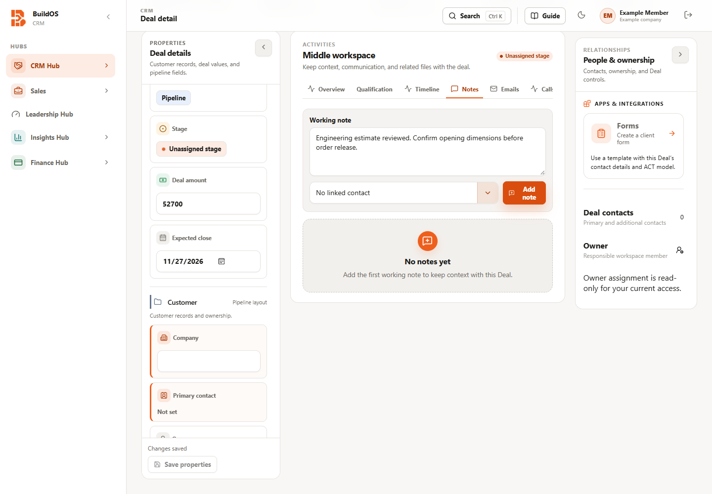
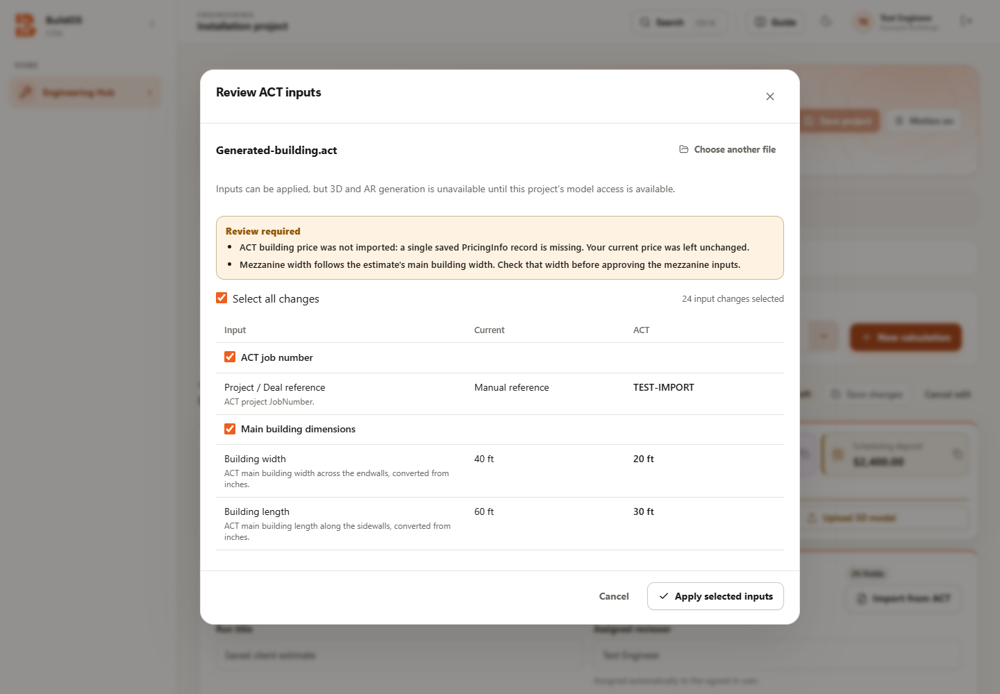
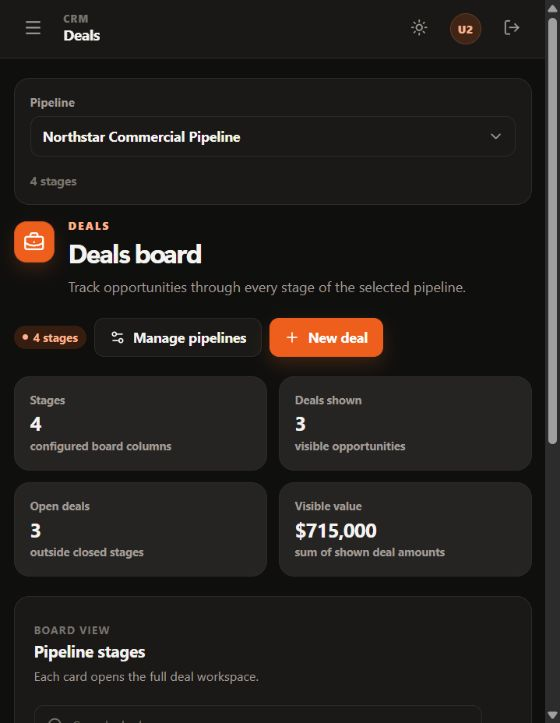
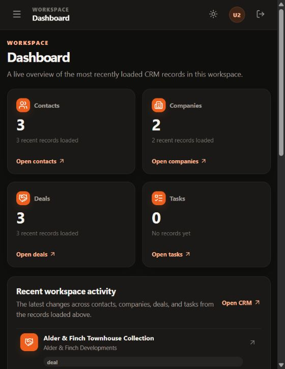

Business Systems Developer
Custom CRM for Sales, Engineering, and Operations
I built a custom CRM for a steel-building business. Sales tracked leads and follow-ups, engineering reviewed estimates tied to each project, and the next team could see what was agreed before taking over. An ACT file import brought building dimensions and quantities into the estimating workflow. I designed the handoffs with the teams who used them.

Application screens



